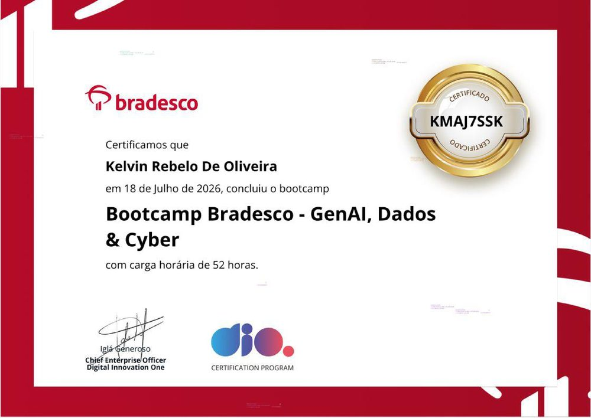

Bradesco
GenAI, Dados & Cyber
IA generativa, análise de dados (Excel, SQL, Power Query, Python) e cibersegurança aplicada ao setor financeiro. Projeto final: BIA, agente financeiro com validação anti-alucinação.